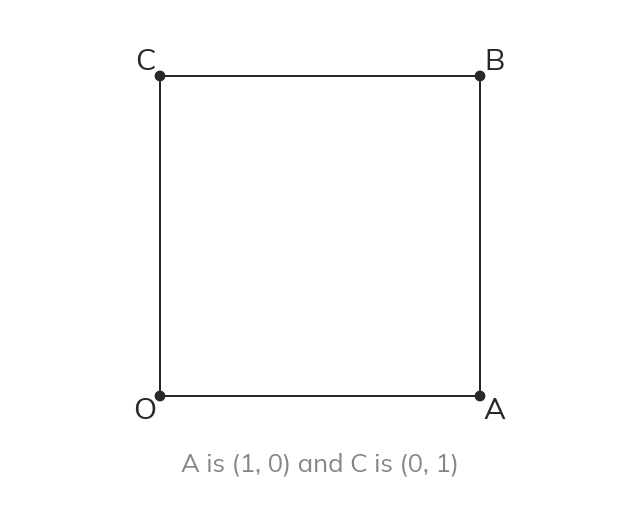
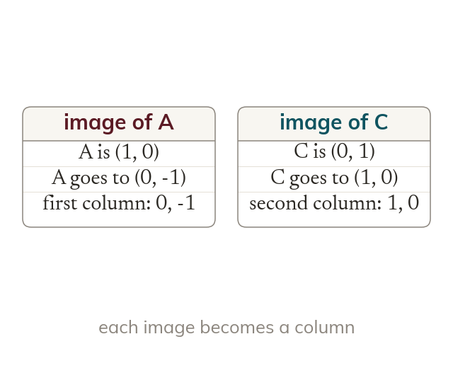
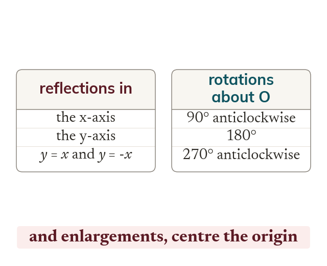
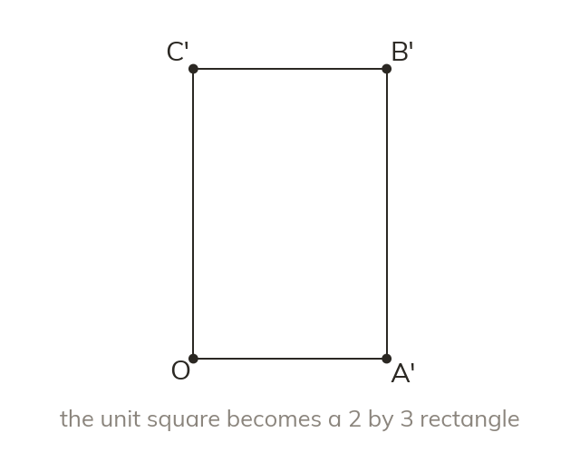
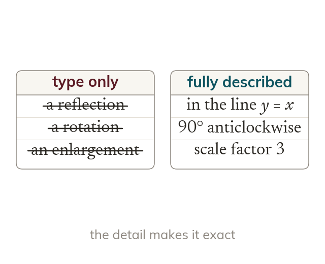

The unit square is how you read a matrix backwards: its corners are exactly the points whose images form the two columns, so from now on you can look at a 2 × 2 matrix and say what it does rather than guess.
By the end you’ll know…
The unit square has vertices O(0,0), A(1,0), B(1,1) and C(0,1).
The images of (1,0) and (0,1) form the two columns of the transformation matrix.
The transformations examined on this specification are a closed list: reflections in the x-axis, y-axis, y=x and y=-x; rotations of 90, 180 and 270 degrees about the origin; and enlargements centred on the origin with positive or negative scale factor.
By the end you can
GFMDerive the matrix for a standard transformation by finding the images of (1,0) and (0,1), and write down the matrix for each transformation on the examinable list.
GFMSketch the image of the unit square under a given matrix, describe fully the transformation it represents, and work backwards to find the matrix from a given image.
Work down the page at your own pace. Write every answer in your book first, then click to check it.
01
Do Now
About 5 minutes
1
A transformation matrix has first column (0,1) and second column (-1,0). What is the image of the point (1,0)?
(0,1) - the image of (1,0) is always the matrix's first column.
2
A shape is enlarged by scale factor 3 about the origin. The unit square has area 1. What is the area of its image?
9 (area scales by the square of the linear scale factor, 3² = 9).
Remember these?
LAST LESSONa21b = 521-3. Write down a and b.
a = 5, b = -3 - equate corresponding elements.
LAST WEEKOn a cumulative frequency graph of 80 values, which reading gives the median?
Read across from 40 (half of 80) to the curve, then down.
LAST TERMξ = {integers 1 to 10}, A = {primes}. List A′.
{1, 4, 6, 8, 9, 10}.
LAST YEAR£500 is invested at 4% compound interest. What is it worth after 2 years?
500 × 1.04² = £540.80.
02
Learn
Read each card, then follow the worked examples one step at a time.

The unit square
The unit square has corners O(0,0), A(1,0), B(1,1) and C(0,1). The images of A and C fill the matrix's columns.
The unit square has corners O(0,0), A(1,0), B(1,1) and C(0,1), and A and C are the two points whose images fill the columns of a matrix. Following those two corners tracks the whole shape.

Images become columns
The image of A is the first column. The image of C is the second column.
The image of A is the first column of the matrix and the image of C is the second column. Writing the two images side by side gives the matrix straight away.

The closed list
Only reflections in four lines, three rotations and enlargements about the origin are examined. Each has a matrix found by following A and C.
Only reflections in four lines, rotations of 90, 180 and 270 degrees anticlockwise, and enlargements about the origin are examined. Every one of them has a matrix found by following A and C.
WORKED EXAMPLE A
Find the matrix for a rotation of 180° about the origin.Follow the corners A and C, then write their images as the columns.
Follow A(1,0) goes to (-1,0)
Follow C(0,1) goes to (0,-1)
Matrix-100-1
WORKED EXAMPLE B
Find the matrix for an enlargement, scale factor -2, centre the origin.A negative scale factor sends each point through the origin to the far side.
Follow A(1,0) goes to (-2,0)
Follow C(0,1) goes to (0,-2)
Matrix-200-2
YOUR TURN · a
Find the matrix for a reflection in the line y = x.
(1,0) goes to (0,1) and (0,1) goes to (1,0), so the matrix is 0110.
YOUR TURN · b
Find the matrix for a rotation of 90° anticlockwise about the origin.
(1,0) goes to (0,1) and (0,1) goes to (-1,0), so the matrix is 0-110.
03
Check your understanding
Pick an answer. If it's wrong, the feedback tells you which mistake it was.
The unit square has corners O(0,0), A(1,0), B(1,1) and C(0,1). Which two images are the columns of a transformation matrix?
Not quite. B is (1,1), not (0,1). The columns are the images of A(1,0) and C(0,1).
Not quite. O never moves, so its image tells you nothing. Use A(1,0) and C(0,1).
Yes.A(1,0) and C(0,1) are the points whose images give the first and second columns.
Not quite. The first column comes from A(1,0), not from B(1,1).
What is the matrix for a rotation of 270° anticlockwise about the origin?
Not quite. This is 90° anticlockwise. For 270° anticlockwise, (1,0) goes to (0,-1).
Not quite. This is a reflection in y = -x. A rotation of 270° sends (0,1) to (1,0).
Not quite. This is the half turn. A rotation of 270° anticlockwise sends (1,0) to (0,-1).
Yes.(1,0) goes to (0,-1) and (0,1) goes to (1,0), so the columns are (0,-1) and (1,0).
What is the matrix for an enlargement, scale factor 4, centre the origin?
Not quite. This leaves (0,1) where it is. Both (1,0) and (0,1) must be multiplied by 4.
Not quite. Each image only has one non-zero coordinate: (1,0) goes to (4,0) and (0,1) to (0,4).
Not quite. This swaps x and y. An enlargement keeps (1,0) on the x-axis: it goes to (4,0).
Yes.(1,0) goes to (4,0) and (0,1) goes to (0,4), so those are the columns.
04
Practise
mark as you go
Checkpoint. Write the matrix for a reflection in the x-axis. Say where the corners A and C of the unit square go, and how those images give the columns.Show your teacher before you go on
From your textbook
Section 9.4 Transformations of the unit square (p244-247). Exercise questions that write down the matrix for each transformation on the list. Skip the 45° rotation and invariant-point questions: the text marks them not examinable.
05
Learn
Read each card, then follow the worked examples one step at a time.

The image of the square
The images of A and C fix the whole new shape. The corner B is the sum of A and C. Its image is the sum of their images.
A matrix sends the unit square to a new shape, and the images of A and C fix every corner of it. The corner B is the sum of the two, so its image is the sum of their images.

Describing fully
A full description names the type and its detail. The type alone does not pin the transformation down.
A full description names the type and its detail: the mirror line for a reflection, the angle and direction for a rotation, the scale factor and centre for an enlargement. The type alone does not pin the transformation down.
WORKED EXAMPLE C
Describe fully the transformation given by 0110.The columns are the images of A and C, so read them first.
Image of A(1,0) goes to (0,1)
Image of C(0,1) goes to (1,0)
Transformationreflection in the line y = x
WORKED EXAMPLE D
The unit square is mapped to O(0,0), A'(-3,0), B'(-3,-3) and C'(0,-3). Find the matrix and describe the transformation.Only A' and C' are needed, because they give the columns.
Columnsthe images of A and C are (-3,0) and (0,-3)
Matrix-300-3
Transformationenlargement, scale factor -3, centre O
YOUR TURN · c
Describe fully the transformation given by 0-110.
(1,0) goes to (0,1) and (0,1) goes to (-1,0): a rotation of 90° anticlockwise about the origin.
YOUR TURN · d
The unit square is mapped to O(0,0), A'(0,-1), B'(-1,-1) and C'(-1,0). Find the matrix and describe the transformation.
The columns are (0,-1) and (-1,0), so the matrix is 0-1-10: a reflection in the line y = -x.
06
Check your understanding
Pick an answer. If it's wrong, the feedback tells you which mistake it was.
Which transformation does -1001 represent?
Not quite. That is only the type. You also need the line: here (1,0) goes to (-1,0).
Not quite. The x-axis would keep (1,0) fixed. Here (1,0) goes to (-1,0), so the line is the y-axis.
Not quite. A quarter turn would send (1,0) to (0,1). Here (1,0) goes to (-1,0).
Yes.(1,0) goes to (-1,0) and (0,1) stays, so the y-axis is the mirror line.
Under 0-110, the corner B(1, 1) of the unit square moves to which point?
Not quite. This is the clockwise image. This matrix is a quarter turn anticlockwise.
Not quite. A half turn would give (-1,-1). Use row 1: 0 × 1 + (-1) × 1 = -1, and row 2: 1.
Not quite.(-1,0) is the image of C. For B, add the two columns: (0,1) + (-1,0) = (-1,1).
The unit square is mapped to O(0,0), A'(0,1), B'(-1,1) and C'(-1,0). What is the matrix?
Not quite. You wrote the images as rows. The image of A, (0,1), is the first COLUMN.
Not quite. This sends (1,0) to (0,-1). Here A goes to (0,1).
Not quite. This sends (1,0) to (-1,0). Here A goes to (0,1).
Yes.A' = (0,1) is the first column and C' = (-1,0) is the second column.
07
Practise
mark as you go
Checkpoint. The unit square is mapped to O(0,0), A'(1,0), B'(1,-1) and C'(0,-1). Write the matrix, and describe the transformation fully.Show your teacher before you go on
From your textbook
Section 9.4 Transformations of the unit square (p244-247). Exercise questions that sketch the image of the unit square, describe the transformation a matrix represents, and find the matrix from a given image. The area and unknown-scale-factor questions are extension.
08
Exit ticket
On paper, on your own, then check
1
State the four corners of the unit square, and say how their images give a transformation matrix.
O(0,0), A(1,0), B(1,1) and C(0,1). The image of A is the first column and the image of C is the second column.
2
Write the matrix for a reflection in the line y = -x.
(1,0) goes to (0,-1) and (0,1) goes to (-1,0) 0-1-10
3
The unit square is mapped to O(0,0), A'(0,-1), B'(1,-1) and C'(1,0). Find the matrix and describe the transformation fully.
The columns are (0,-1) and (1,0), so the matrix is 01-10. It is a rotation of 270° anticlockwise about the origin.
Finished? Next lesson: 9.5 Combining Transformations.
Practise more
After the lesson, or whenever you want more
Dr Frost
Log in, then search for a code to practise that skill.
691dTransform a unit square using a matrix.
692fWrite a matrix that represents a drawn transformation of a unit square.
692eDescribe the effect of a matrix representing a rotation (by a multiple of 90°) or reflection.